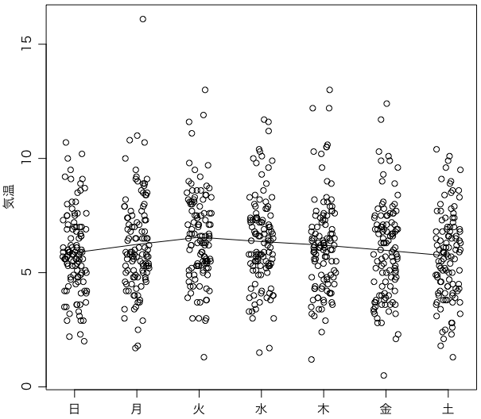

東京の大雪は、なぜ土日と祝日に多いのか？ に，次のようなおもしろいことが書いてあった。
東京都心の大雪注意報の基準は、降雪5センチです。結果的に5センチ以上積もった日を、90年代以降で調べてみました。
5センチ以上の積雪があったのは12回。そのうち10回が、土曜日・日曜日・祝日に降っています。
80年代は、そういった傾向は見られません。一方、2000年以降の5センチ以上は、すべて土日か祝日です。
さっそく調べてみる。気象庁|過去の気象データ・ダウンロード で，地点を「東京」，項目を「日最深積雪」，期間を「1990年1月1日から2014年2月9日までの日別値を表示」にして，データをダウンロードする。結果をUTF-8にして少し整形したものが tokyo_snow.csv である［追記：切りの良い3月31日までに増やした。以下同様］。
［ご注意］データは気が向いたら更新していますので，以下の結果と違うかもしれません。
これをRで読み込む。data.table を使う。
yuki = fread("http://oku.edu.mie-u.ac.jp/~okumura/stat/data/tokyo_snow.csv")
ooyuki = subset(yuki, 最深積雪cm >= 5)
dim(ooyuki)
t = as.Date(ooyuki$年月日)
table(month(t)) # 1月:14, 2月:17, 3月:1
table(weekdays(t))
大雪が32日，うち土曜日は10日，日曜日は8日である（祝日は調べてません^^;）。
| 日曜日 | ＊＊＊＊＊＊＊＊ |
|---|---|
| 月曜日 | ＊＊＊＊＊ |
| 火曜日 | ＊ |
| 水曜日 | ＊ |
| 木曜日 | ＊＊＊ |
| 金曜日 | ＊＊＊＊ |
| 土曜日 | ＊＊＊＊＊＊＊＊＊＊ |
32日中18日が土日。このようなことが起こる p 値は？
binom.test(18, 32, 2/7)
p = 0.001242，うーん。かなり有意だ。
中澤先生から「積雪だと大雪の次の日も残るので、大雪が土日祝日に多いかどうか調べるには、日最深積雪よりも降雪量合計の方が適しているように思います。参照された記事は少し一貫してなくて、大雪の基準を降雪5cmとしながら、その後は「5cm以上の積雪」と書いていますが。」という天の声をいただいたので，降雪量合計のデータも取ってみた。整形したものを tokyo_snow2.csv とする。
yuki2 = fread("http://oku.edu.mie-u.ac.jp/~okumura/stat/data/tokyo_snow2.csv")
ooyuki2 = subset(yuki2, 降雪量合計cm >= 5)
dim(ooyuki2)
t = as.Date(ooyuki2$年月日)
table(weekdays(t))
| 日曜日 | ＊＊ |
|---|---|
| 月曜日 | ＊ |
| 火曜日 | |
| 水曜日 | |
| 木曜日 | ＊＊＊ |
| 金曜日 | ＊ |
| 土曜日 | ＊＊＊＊＊＊＊＊ |
今度は15日のうち10日が土日だ。
binom.test(10, 15, 2/7)
p = 0.002446，うーん。やっぱり有意だ。
ちなみに，独立ではない（雪の日の次も雪の日が多いという自己相関がある）ので，これらの検定はウソです。
追記：2014年2月9日までのデータの時点で，中澤先生から次のコメントをいただいた：「じゃあ土日は平日の何倍大雪になりやすいのかと考えて、 fisher.test(matrix(c(9, 4, 1258*2-9, 1258*5-4),2)) したら、オッズ比は5.64 (95%CI: 1.57-25.09)でした。
坂本さんからは「大雪が28日あったうち16日が土日なので実際多いのですが、土日気温が低めなのか？とかの関連データも気になります。」（2014年2月9日までのデータの時点）というご意見をいただいた。tokyo_temp.csv に整形したものを置く。
temp = fread("http://oku.edu.mie-u.ac.jp/~okumura/stat/data/tokyo_temp.csv")
t = as.Date(temp$年月日)
w = weekdays(t)
we = subset(temp, w == "日曜日" | w == "土曜日")
wd = subset(temp, w != "日曜日" & w != "土曜日")
mean(we$平均気温) # 16.47607
mean(wd$平均気温) # 16.57771
t.test(wd$平均気温, we$平均気温)
あ，こんなt検定なんかやっても無意味だ。どなたかちゃんとやって教えてください m(__)m
後日談：とりあえず寒い月（1月とか）の平均気温が土日に低いという話があるので，プロットしておきます。1900年以降の1月の毎日の平均気温をジッター（ランダムな横揺れ）付きでプロットし，折れ線グラフで各曜日の平均を示しました（2014/2/9時点）。
平均としては確かに土日が寒いのですが，日々の変動はけっこうあります。
2014-02-18の日経新聞朝刊にわずかな気温差で大雪にという記事が載っています。2月14-15日の記録的大雪は，気温が気象庁の予想よりも1〜2度低く，「コンピューターの計算では誤差の範囲に入るわずかな気温の差が、雨か大雪かの分かれ目になった」とのことです。
乱数のジッターにするより，年を使ったほうがいいという気がしてきたので，年でもやってみましたが，特に新しいことはわかりませんでした。
library(data.table)
temp = fread("http://oku.edu.mie-u.ac.jp/~okumura/stat/data/tokyo_temp.csv")
t = as.Date(temp$年月日)
temp[,y:=year(t)] # 年
temp[,m:=month(t)] # 月 (1..12)
temp[,w:=wday(t)] # 曜 (1..7)
temp1 = temp[m==1] # 1月
mt = numeric(7)
for (i in 1:7) mt[i] = mean(temp1[w==i]$平均気温)
par(mgp=c(2,0.8,0))
plot(NULL, xlim=c(0.8,7.2), ylim=range(temp1$平均気温), xlab="", ylab="気温", xaxt="n")
you = c("日","月","火","水","木","金","土")
axis(1, 1:7, you)
# points(jitter(temp1$w), temp1$平均気温, pch=1) # 乱数のジッター
points(temp1$w-0.4*(temp1$y-2002)/24, temp1$平均気温, pch=1) # 年をジッターにする
points(1:7, mt, type="l") # 平均気温を折れ線で
Last modified: